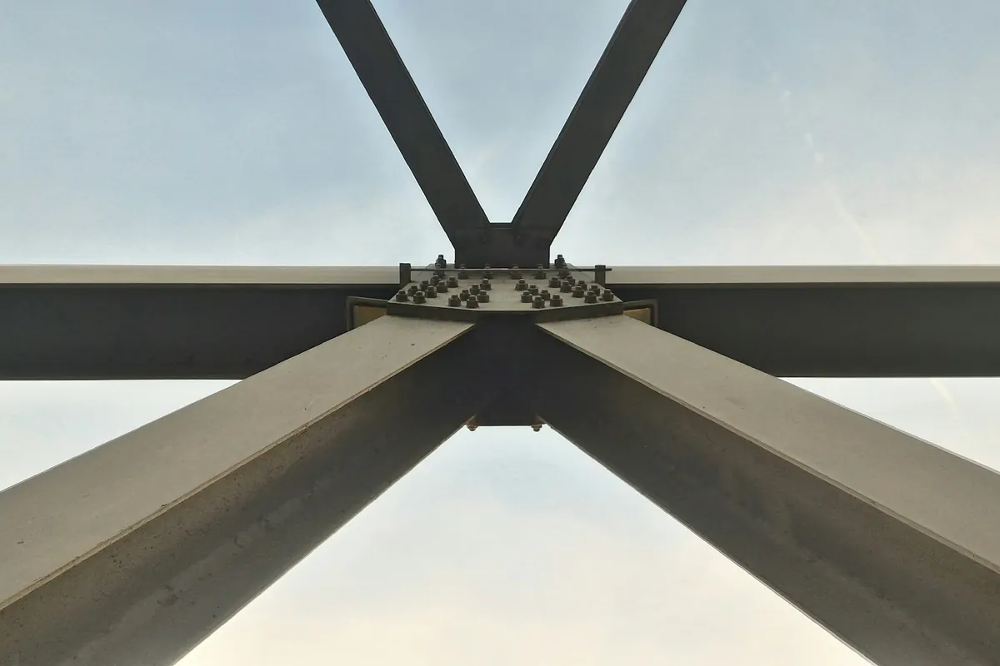
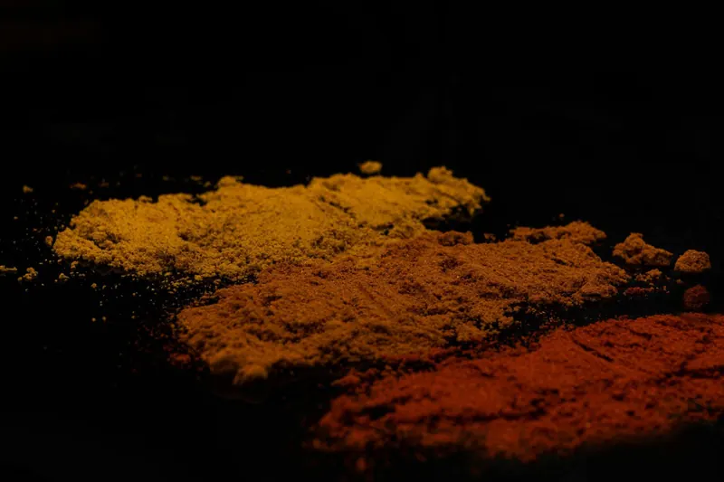
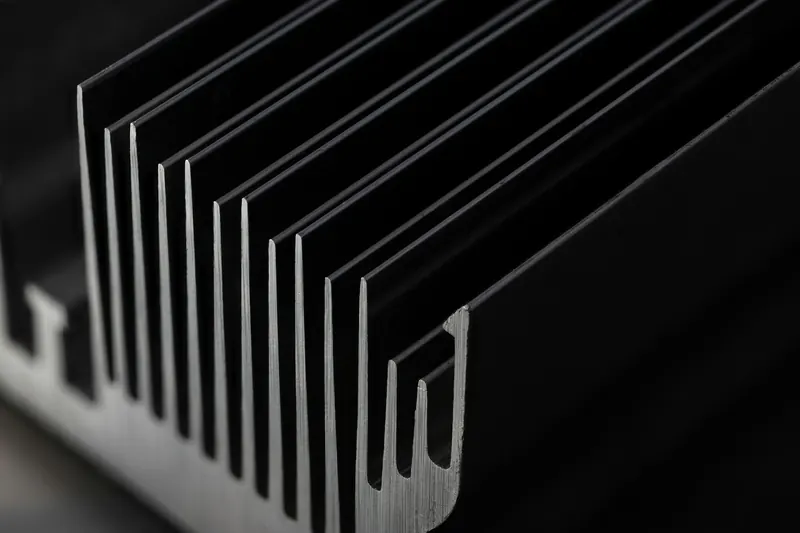
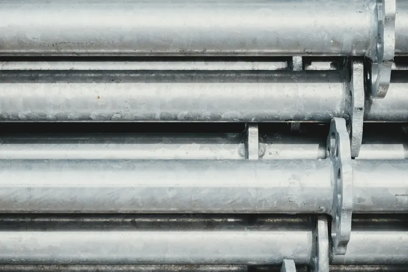
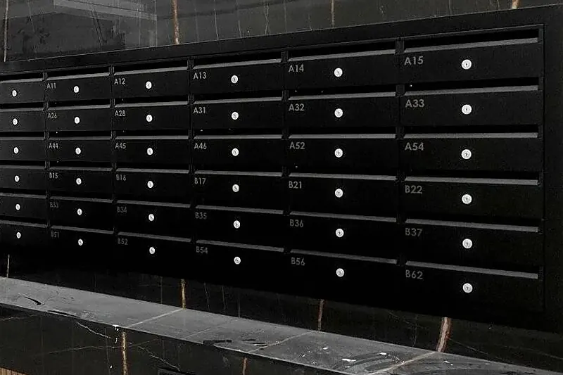

Sin baño de zinc fundido
El galvanizado en caliente sumerge la pieza en zinc fundido a unos 450 °C, y la chapa fina o las piezas soldadas asimétricas pueden deformarse. La imprimación se aplica en nuestra línea, sin ese choque térmico.
Protección anticorrosiva en Legutio (Álava), cerca de Vitoria-Gasteiz
Una imprimación en polvo cargada de zinc que protege el acero y, encima, el acabado de poliéster en polvo, en el RAL que elijas. Para piezas y estructuras de acero que necesitan protección anticorrosiva sin pasar por el galvanizado o el zincado.

Es una imprimación en polvo, como la pintura de acabado, con una carga muy alta de zinc. El zinc es menos noble que el acero: si la capa se raya o recibe un golpe, se corroe él antes que el acero y lo protege. Es la misma protección catódica, o de sacrificio, que da el galvanizado.
Encima va el acabado de poliéster en polvo, que aporta el color, el acabado y la resistencia a la intemperie, y hace de barrera: protege también el zinc, que así dura más.
Se aplica sobre acero: en aluminio, el zinc no aporta protección galvánica.
Lo es cuando galvanizar no es viable o no compensa:
El galvanizado en caliente sumerge la pieza en zinc fundido a unos 450 °C, y la chapa fina o las piezas soldadas asimétricas pueden deformarse. La imprimación se aplica en nuestra línea, sin ese choque térmico.
En la misma línea y con un solo plazo: no hace falta llevar la pieza al galvanizador y después al lacador.
El galvanizado en caliente deja una capa de zinc mucho más gruesa y aleada con el acero (en acero de más de 6 mm, la EN ISO 1461 pide al menos 85 µm de media) y llega al interior de los tubos cerrados; la imprimación se aplica en las superficies exteriores. Si la pieza va a un ambiente muy agresivo o tiene que durar muchos años sin mantenimiento, te lo diremos.
De fuera hacia dentro, así protege el sistema una pieza de acero:
C4-H · sello QUALISTEELCOAT en proceso de homologación
La norma ISO 12944-2 clasifica los ambientes según su corrosividad, de C1 (interior seco) a CX (extremo). C4 es corrosividad alta: zonas industriales y costa de salinidad moderada, donde el acero sin proteger pierde de 50 a 80 µm de espesor el primer año.
La letra que sigue es la durabilidad prevista (ISO 12944-1): L, hasta 7 años; M, de 7 a 15; H, de 15 a 25, y VH, más de 25. C4-H es ambiente C4 con durabilidad alta. La durabilidad es un dato para planificar el mantenimiento, no una garantía.
Para C4-H, la parte 6 de la norma pide 480 h de condensación (ISO 6270-1) y 720 h de niebla salina neutra (ISO 9227). El sello QUALISTEELCOAT está en proceso de homologación.
La serie ISO 12944 se escribió para pinturas líquidas; en sistemas en polvo se usan sus categorías y sus métodos de ensayo. Para certificar un sistema en polvo sobre acero, el esquema de referencia es QUALISTEELCOAT.
En nuestros propios productos, como los buzones de Joma, el sistema Marine llega a C5-M. Para piezas de clientes, el sistema que ofrecemos es C4-H.
No. Los dos protegen el acero con zinc, pero el galvanizado en caliente sumerge la pieza en zinc fundido y deja una capa más gruesa, aleada con el acero, también dentro de tubos y cavidades. La imprimación rica en zinc es una pintura en polvo que se aplica bajo el acabado. Es una alternativa cuando galvanizar no es viable o no compensa, no un equivalente.
Porque la imprimación sola no aguanta la intemperie ni da el acabado. La pintura en polvo aporta el color y hace de barrera, y protege también el zinc, que así dura más.
C4 es el ambiente: corrosividad alta, como una zona industrial o la costa de salinidad moderada. La H es la durabilidad prevista: alta, de 15 a 25 años, según ISO 12944. Es un dato para planificar el mantenimiento, no una garantía.
No. Como imprimación anticorrosiva ofrecemos la rica en zinc, con acabado en pintura en polvo.
Sobre aluminio, no: el zinc no le aporta protección galvánica. Y el acero galvanizado ya lleva su zinc: se laca con su propio pretratamiento.
Piezas de hasta 6 m de largo, 2 m de alto y 0,65 m de ancho, y hasta 165 kg.
El sello QUALISTEELCOAT del sistema C4-H está en proceso de homologación.

Termolacado de piezas y estructuras Pintura en polvo epoxi, poliéster o epoxi-poliéster sobre acero, galvanizado y aluminio, del piecerío a la gran dimensión. Carta RAL, y Pantone y NCS bajo pedido: liso, texturado fino o gofrado, del mate al brillo, y también metalizados y perlados.
Lacado de perfiles de aluminio Perfilería en el color y el acabado que necesites, con la misma línea y el mismo control.
Termolacado de acero galvanizado Desgasificado y preparación específica para evitar poros y burbujas: sistema dúplex de zinc y pintura en polvo.
Grabado láser e impresión UV Grabado láser, impresión UV con relieve, tampografía y serigrafía: logotipos, referencias e indicaciones sobre la pieza.Firme y por escrito en menos de 24 horas laborables. Si lo prefieres, llámanos.